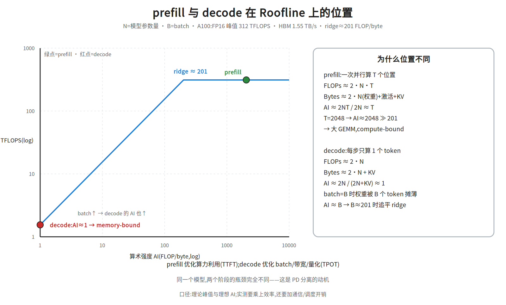
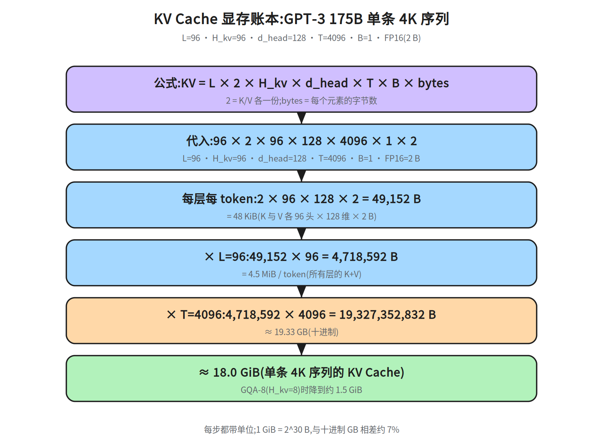
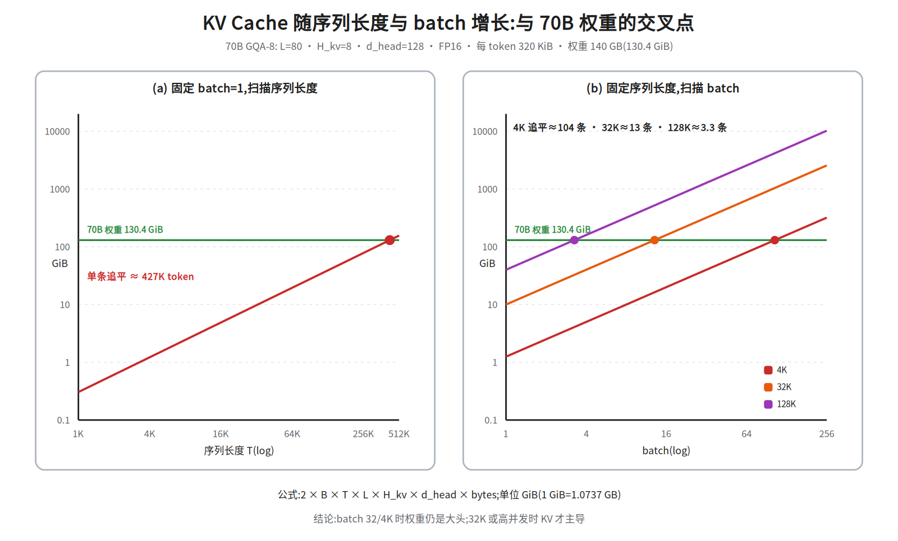
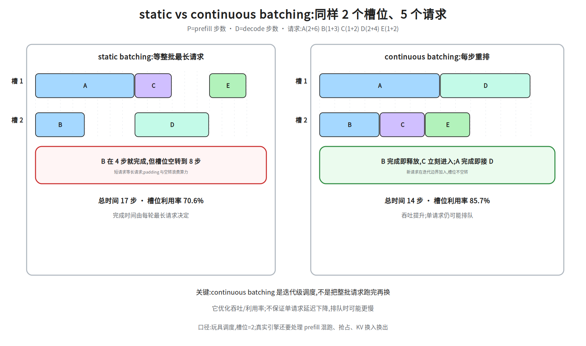
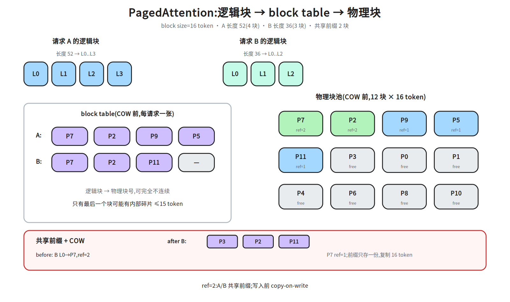
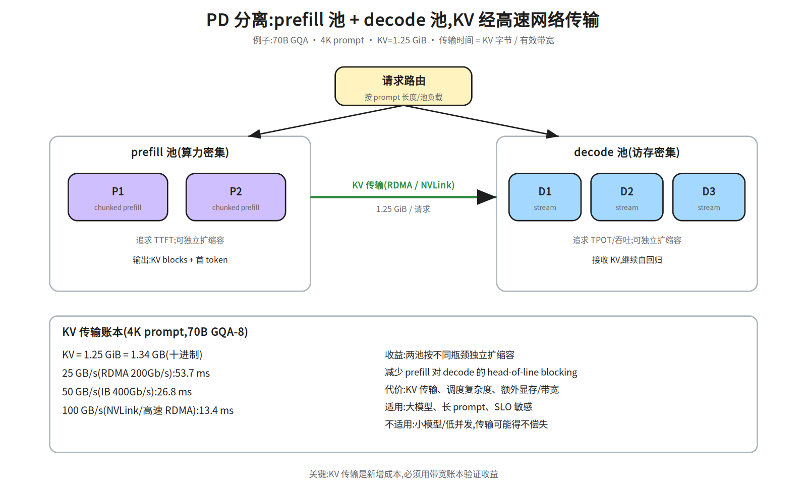
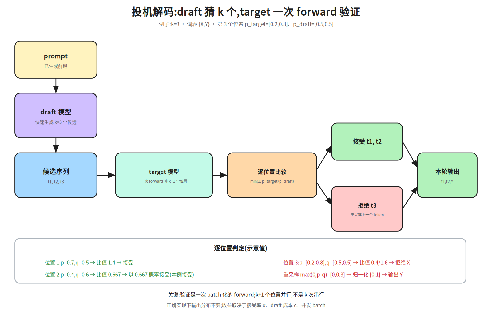
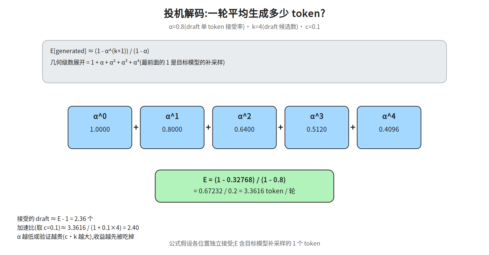

M2-3 · 推理系统¶
本层回答：一个线上推理服务，如何在给定 GPU、延迟和 SLO 下，把每个 token 的成本打到最低、 吞吐拉到最高？——模型侧的自回归/KV Cache 原理见
notes/06_inference.md，本层讲系统与工程。前置（按节）：
notes/04_architecture.md §2（因果掩码）、notes/05_modern.md §3（GQA）、notes/06_inference.md §3–5（KV Cache / prefill-decode）、notes/21_single_node_ops.md §4（Roofline）、notes/21_single_node_ops.md §8（量化）。建议路径（每次 45 分钟）：① §1–5（指标 / 两阶段 / KV / batching / PagedAttention）； ② §6–9（引擎 / 并行 / 量化 / 投机解码）；③ §10–13（长上下文 / 在线服务 / 排障 / 容量）。
深度标注：§1–6、§8、§11–13 为必学；§7.2 PD 分离、§9 投机解码、§10 长上下文为加分； §7.1 的 TP/PP 是必学，EP 为了解；§7.0 是前置，没学 M2-4 也能读。
0. 依赖图（学习顺序）¶
graph TD
A["自回归生成"] --> B["prefill / decode 两阶段"]
B --> C["KV Cache<br/>显存账本"]
C --> D["Batching 与调度<br/>static vs continuous"]
D --> E["PagedAttention<br/>分页与共享"]
E --> F["推理引擎架构<br/>vLLM / SGLang / TensorRT-LLM"]
B --> G["并行与部署<br/>TP / PP / PD 分离"]
C --> H["量化<br/>W4A16 / W8A8 / FP8"]
D --> I["投机解码<br/>draft + verify"]
F --> J["在线服务<br/>网关 / 弹性 / 多租户 / SLO"]
G --> J
H --> J
I --> J
J --> K["排障与容量<br/>TTFT / TPOT / P99 / 成本"]1. 推理指标：先统一语言¶
| 指标 | 含义 | 谁在意 |
|---|---|---|
| TTFT（Time To First Token） | 从请求到第一个 token 的延迟 | 交互体验、首屏 |
| TPOT / ITL（Time Per Output Token） | 首 token 之后，每个 token 的平均间隔 | 流式输出的流畅度 |
| Throughput | 单位时间生成的 token 数 / 完成的请求数 | 成本、容量 |
| P99 延迟 | 99% 请求的延迟上界 | 线上 SLO |
| Goodput | 满足 SLO 的有效吞吐 | 真实服务能力 |
| 单位 token 成本 | GPU 成本 / 生成 token 数 | 商业与容量 |
| GPU 利用率 / KV Cache 使用率 | 资源效率 | 运维与调度 |
吞吐和延迟经常是 trade-off：增大 batch 提高吞吐，但可能拉高单请求延迟；continuous batching 主要优化吞吐和 GPU 利用率，不保证单请求更快。
一条请求的时间线：
- TTFT ≈ 排队时间 + prefill 时间；
- TPOT ≈ decode 每步间隔；
- P99 是端到端延迟的 99 分位，不是平均值；
- goodput：如 10 req/s 的负载里有 8 个满足 SLO，则 goodput ≈ 8 req/s。
2. prefill 与 decode：两种完全不同的负载¶
| prefill | decode | |
|---|---|---|
| 输入 | 整个 prompt（T 个 token） | 1 个新 token + 历史 KV |
| 并行度 | 高（T 个位置并行） | 低（每步 1 个 token） |
| 计算特征 | 大 GEMM，偏 compute-bound | 权重 + KV 读取，偏 memory-bound |
| 主要指标 | TTFT | TPOT |
| 优化手段 | 算子融合、TP、chunked prefill | batching、量化、KV 压缩、投机解码 |
关键直觉：
- prefill 像「批量读一篇文章」，算力利用率高；
- decode 像「每步只写一个字」，每步都要把模型权重和 KV Cache 从 HBM 读一遍，算力大量闲置；
- 所以 decode 的核心是提高 batch、减少每步搬运，而不是堆 FLOPs。

用算术强度把直觉量化（A100：FP16 峰值 312 TFLOPS、HBM 1.55 TB/s、ridge≈201 FLOP/byte）：
- prefill：一次并行算
T个位置，FLOPs≈2NT，Bytes≈2N+激活+KV（权重为主）， 所以AI≈2NT/(2N+激活+KV)≈T；T=2048时AI≈2048 ≫ 201，compute-bound； - decode：每步只算 1 个 token，
FLOPs≈2N，Bytes≈2N+KV，AI≈1， memory-bound；batch=B时权重被 B 个 token 摊薄，AI≈B，B≈201时追平 ridge。
这里
N是模型参数量，B是 batch，T是序列长度。注意N在 prefill 的2NT/2N里抵消了，所以 7B 和 70B 的AI 位置几乎相同；差别在绝对 FLOPs（70B 是 7B 的 10×） 和权重/KV 的绝对字节数。decode 同理：AI≈B与模型大小无关，但 70B 的每步延迟更高， 因为它要搬的权重更多。口径：这是理论峰值与理想 AI；实测要乘上 kernel 效率，还要加通信/调度开销。 结论不变：prefill 优化算力利用（TTFT），decode 优化 batch/带宽/量化（TPOT）。
这也是 PD 分离（prefill/decode disaggregation）的动机：两种负载对硬件和并行的需求不同，混在一起会互相拖累。
3. KV Cache 显存账本¶
3.1 公式¶
2：K 和 V 各一份；B：batch；T：序列长度（含历史）；L：层数；H_kv：K/V 头数（MHA 时等于注意力头数，GQA/MQA 时更少）；d_head：每个头的维度；bytes_per_element：FP16/BF16 = 2，FP8/INT8 = 1。
3.2 三个具体例子（FP16）¶
| 模型 | L | H_kv | d_head | 每 token | 4K 序列（GiB） | 4K 序列（十进制 GB） |
|---|---|---|---|---|---|---|
| LLaMA-2 7B（MHA） | 32 | 32 | 128 | 512 KiB | 2.0 GiB | 2.15 GB |
| LLaMA-2 70B（GQA-8） | 80 | 8 | 128 | 320 KiB | 1.25 GiB | 1.34 GB |
| GPT-3 175B（MHA） | 96 | 96 | 128 | 4.5 MiB | 18.0 GiB | 19.33 GB |
注意
H_kv：GQA 把 K/V 头数从 64 降到 8，KV Cache 直接降到 1/8。这就是 GQA 在推理侧的核心价值。batch 32、4K、70B GQA：
1.25 GiB × 32 = 40 GiB——还没算模型权重，就已经很可观。单位口径：上表按
1024^3算 GiB；换算十进制 GB 要乘1.0737。 例：LLaMA-2 70B GQA 4K 的1.25 GiB ≈ 1.34 GB；GPT-3 175B 的18.0 GiB ≈ 19.3 GB。

图里把 GPT-3 175B 的账逐步展开：96 × 2 × 96 × 128 × 4096 × 1 × 2
= 19,327,352,832 B = 19.33 GB ≈ 18.0 GiB。每步都带单位，方便面试时现场推。
3.3 显存总账¶
- 权重：FP16 下约
参数量 × 2字节（70B ≈ 140 GB）； - KV Cache 随 batch × 序列长度 线性增长；
- 长上下文、高并发时，KV Cache 往往先于权重成为瓶颈。
3.4 谁先成为瓶颈？¶
以 70B GQA 为例：4K 序列每条约 1.25 GiB（≈1.34 GB），FP16 权重约 140 GB（多卡聚合，单张 80 GB 卡放不下）→
140 / 1.34 ≈ 104 条并发序列时 KV 才追平权重；
32K 时每条约 10 GiB（≈10.74 GB），140 / 10.74 ≈ 13 条就追平。
所以 batch 32、4K 时权重仍是大头；32K 或高并发时 KV Cache 才成为主导。 不要把「长上下文/高并发时 KV 成为瓶颈」当成无条件结论。

图用 70B GQA-8（每 token 320 KiB、权重 140 GB = 130.4 GiB）画了两条扫描线：
- batch=1，扫 T：KV 随 T 线性增长，单条要到约 427K token 才追平权重； 所以 4K/32K 单条时，权重仍是显存大头。
- 固定 T，扫 batch：4K 时约 104 条并发追平权重；32K 约 13 条；128K 约 3.3 条。 batch 越高、序列越长，KV 越快成为主导。
这解释了为什么长上下文服务要同时做 GQA + KV 量化 + PagedAttention + PD 分离： 它们分别从“每 token 更小”“每字节更少”“少浪费”“分开扩容”四个方向压 KV 成本。
4. Batching 与调度¶
4.1 静态 Batching 的问题¶
静态 batching 把一批请求凑齐、一起跑：
- 要等最长的序列结束，短的 GPU 空转；
- padding 浪费算力和显存；
- 请求到达时间不同，凑批增加排队延迟。
4.2 Continuous Batching（迭代级调度）¶
每生成一个 token（或每若干步）就重新组批：
- 完成的请求立刻离开，新请求立刻加入；
- 不需要等整批结束，GPU 利用率显著提高；
- vLLM、TensorRT-LLM、SGLang 等引擎的核心能力。

图里用 2 个槽位、5 个请求做玩具调度（请求格式为 P+D）：
- static：第一轮
[A,B]要等最长请求 A 跑完 8 步；B 在第 4 步就完成，槽位空转到第 8 步。 第二轮[C,D]又等 D 到第 14 步；第三轮 E 到第 17 步。槽位利用率24/34≈70.6%。 - continuous：B 完成立刻让 C 进入，A 完成立刻接 D，总时间 14 步，利用率
24/28≈85.7%。
注意：这里的“利用率”是玩具口径（占用槽位步数 / 总槽位步数），真实引擎还要算 prefill 混跑、抢占、KV 换入换出。吞吐提升不等于单请求延迟下降：排队时单请求可能更慢。
代价：
- 调度、KV Cache 管理更复杂；
- 单请求延迟可能变长（尤其在排队时）；
- 需要处理 preemption、抢占、KV 换入换出。
4.3 调度策略¶
| 策略 | 目的 |
|---|---|
| FCFS / 优先级 | 公平性或业务优先级 |
| 连续 batching | 提高吞吐 |
| Chunked prefill | 把长 prompt 的 prefill 切成块，和 decode 混跑，降低 TTFT 抖动 |
| Preemption | 显存不足时，抢占/重算/换出某些请求 |
| 长度感知 / 分桶 | 减少 padding 和碎片 |
| 多租户配额 | 隔离与公平 |
chunked prefill 的直觉：prefill 是 compute-bound，decode 是 memory-bound；把 prefill 切块插进 decode 的间隙，能同时利用算力和带宽，减少长 prompt 对其他请求的 head-of-line blocking 和 TPOT 抖动。代价是被切块请求自身的 TTFT 可能变长、调度更复杂。
5. PagedAttention¶
5.1 要解决的问题¶
传统 KV Cache 给每个请求预分配一段连续显存：
- 不知道最终生成长度 → 预分配过大 → 浪费；
- 预分配过小 → 频繁扩容/拷贝；
- 不同请求长度差异大 → 外部碎片严重。
5.2 分页思路¶
把 KV Cache 切成固定大小的 block（如 16 个 token），按需分配：
- 每个请求维护一张 block table；
- 只有最后一个 block 可能有内部碎片（≤ block size）；
- 显存按需增长，外部碎片大幅减少；
- 前缀共享：相同 prompt 前缀的请求可以共享物理 block（copy-on-write）；
- Beam search / 并行采样：分支共享已生成的 KV，写时复制。

图里的具体账本（block=16 token）：
- 请求 A 长度 52 →
ceil(52/16)=4个逻辑块，容量 64，内部碎片 12； - 请求 B 长度 36 → 3 个逻辑块，容量 48，内部碎片 12；
- A 的 block table
[P7,P2,P9,P5]，B 的[P7,P2,P11]：前两块共享，第三块私有； ref(P7)=ref(P2)=2；B 要写 P7 时触发 copy-on-write：分配 P3、复制 16 个 token、ref(P7)从 2 降到 1。图里画的是 COW 前状态，COW 后 B 的 block table 变成[P3,P2,P11]；- 逻辑块总数 7，物理块只用了 5 个（共享省下 2 块）。
碎片只出现在每个请求的最后一个块，上限是
block_size-1=15token； 外部碎片基本消失，因为物理块不需要连续。PagedAttention 不是「让计算更快」，而是让 KV Cache 的显存管理更高效：更高并发、更少浪费、支持共享。它是 vLLM 的核心创新之一。
6. 推理引擎架构¶
6.1 典型请求生命周期¶
API Server
→ Scheduler（排队、组批、chunked prefill）
→ KV Cache Manager（分配/回收/共享 block）
→ Model Executor / Worker（prefill + decode）
→ Sampler（greedy / temperature / top-k / top-p）
→ Detokenizer
→ 流式返回
6.2 三个主流引擎的侧重¶
| 引擎 | 机制 | 代价/限制 | 何时选 |
|---|---|---|---|
| vLLM | PagedAttention + continuous batching + 可扩展调度 | 极致性能不如编译方案 | 通用高吞吐服务、需要改源码/扩展 |
| SGLang | RadixAttention 前缀缓存 + 前端 DSL | 生态较新 | 多轮/Agent、大量共享前缀 |
| TensorRT-LLM | 图编译 + NVIDIA 插件 + in-flight batching | 编译/适配成本高、硬件绑定 | 稳定模型 + NVIDIA、追求极致性能 |
面试不要只背名字：能说清「它解决哪个环节的问题、代价是什么」才有价值。
7. 并行与部署¶
7.0 最小前置（没学 M2-4 也能读）¶
- AllReduce：所有卡把梯度/激活求和，结果广播给所有卡；
- AllToAll：每张卡向其他卡发送不同的数据切片；MoE 的 EP 用它做 token 路由；
- TP（张量并行）：层内切分，每层后通常要 AllReduce；
- PP（流水线并行）：按层切 stage（一段连续的层），micro-batch（切成小批）流水； bubble 是流水线空转；
- NVLink 域：单机内 GPU 的高带宽互联；跨机通常走 RDMA/IB；
- RDMA：绕过 CPU 的直接内存访问，用于跨机通信和 KV 传输。
7.1 推理并行¶
| 方式 | 做法 | 适用 |
|---|---|---|
| TP（张量并行） | 切注意力头/FFN，层内 AllReduce | 单机多卡、低延迟 |
| PP（流水线并行） | 按层切分，多 stage | 跨节点、超大模型 |
| EP（专家并行） | MoE 按专家切分，token 通过 AllToAll 路由 | 超大 MoE 推理；代价是通信与负载均衡 |
| 多实例复制 | 每个 GPU/节点跑完整模型 | 吞吐扩展、弹性 |
| PD 分离 | prefill 池 + decode 池，KV 通过高速网络传输 | 大模型、长 prompt、SLO 敏感 |
TP 的代价是每层都要通信，通常放在 NVLink 域内；PP 的代价是 pipeline bubble 和跨节点通信。
TP/PP 通信账本（记住数量级）：
- TP（推理，只看前向）：每个 Transformer 层前向有 2 次 AllReduce（attention 输出投影后、
FFN 下投影后），每次张量
[B, T, d_model]；ring all-reduce 每卡通信量约2S， 所以每层前向约4S。S = B·T·d_model·bytes。训练还要反向，再加4S，合计约8S。 - PP：在 stage 边界传
[B, T, d_model]激活，每个 micro-batch 一次 send/recv； 通信量不大，但延迟和 bubble 是主要成本。bubble 比例约(p-1)/(m+p-1)（p=stage 数，m=micro-batch 数）。 - 因此 TP 放 NVLink 域内（每层都通信，跨节点会拖垮），PP/DP 可跨节点； TP 度数受 NVLink 带宽和层内延迟限制，常见 ≤8。
7.2 PD 分离¶
- prefill 池：算力密集，追求 TTFT；
- decode 池：访存密集，追求 TPOT 和吞吐；
- KV Cache 从 prefill 传到 decode（RDMA/NVLink）；
- 好处：分别扩缩容、减少相互干扰；
- 代价：KV 传输、调度复杂度、部署成本。

KV 传输账本（70B GQA、4K prompt、FP16）：
KV = 1.25 GiB ≈ 1.34 GB
25 GB/s（RDMA 200Gb/s） → 1.34 / 25 ≈ 53.7 ms
50 GB/s（IB 400Gb/s） → 1.34 / 50 ≈ 26.8 ms
100 GB/s（NVLink/高速 RDMA）→ 1.34 / 100 ≈ 13.4 ms
传输时间是新增成本。长 prompt 的 prefill 可能几百 ms，KV 传输几十 ms 仍划算； 但小模型/低并发时，传输和调度开销可能吃掉收益。不要默认 PD 分离更快，要用带宽账本验证。 另外，KV 传输带宽是单向有效带宽，和网卡标称的双向带宽不是一回事。
8. 量化¶
8.1 常见方案¶
| 方案 | 量化对象 | 适用 |
|---|---|---|
| W4A16 / W8A16 | 只量化权重 | decode 访存瓶颈、端侧 |
| W8A8 | 权重 + 激活 | 通用推理加速 |
| FP8 | 权重 + 激活 | H100 等新硬件 |
| KV Cache 量化 | KV Cache | 长上下文、高并发 |
8.2 精度问题¶
- outlier：少数极大值拉大 scale，导致整体精度下降；
- 激活分布随输入变化：校准集不具代表性会掉点；
- 长尾任务：平均指标没掉，但某些任务明显退化。
必须做任务级评测，不能只看 perplexity 或单个 benchmark。
KV Cache 量化：常用 FP8 E4M3（精度高、范围小）或 INT8；按 head / block 维护 scale，
用校准集的 amax 估计。KV 的 outlier 会直接放大 attention score 误差，长上下文尤其敏感；
建议逐层评估，先量化非敏感层，保留首尾层或 attention sink 的 KV。
FP8 E4M3 与 E5M2 不是一回事：E4M3 尾数多、精度高但范围小；E5M2 范围大、精度低。 权重/激活常用 E4M3，梯度或对范围敏感的中间量才考虑 E5M2。scale 的粒度（per-tensor / per-channel / per-block）越细，精度越好，但元数据和 kernel 复杂度也越高。
8.3 掉点后的恢复流程¶
- 定位：权重 / 激活 / KV Cache？哪一层/哪个模块最敏感？
- 校准集：有代表性、覆盖长尾输入。
- 粒度：per-channel / per-group；保留 outlier。
- 方法：按掉点类型选。
| 方法 | 机制 | 代价 | 何时选 |
|---|---|---|---|
| AWQ | 用激活敏感度保护显著权重通道（weight-only） | 需校准 | W4A16、decode 带宽瓶颈 |
| GPTQ | 用校准数据的二阶信息做逐列误差补偿（weight-only） | 需校准、离线耗时 | W4A16/W8A16、离线量化 |
| SmoothQuant | 把激活 outlier 迁移到权重，支持 W8A8 | 需校准、可能损精度 | 激活 outlier 严重的 W8A8 |
| QAT | 训练中模拟量化 | 训练成本高 | PTQ 不够、精度要求高 |
对应关系：权重掉点 → AWQ/GPTQ；激活掉点 → SmoothQuant；KV 掉点 → KV 量化或回退； 敏感层 → 混合精度回退。
- 混合精度：敏感层回退 W8A16 / FP16；KV Cache 不量化。
- 回归：任务级指标 + 长尾 case + 与 FP16 基线对比。
9. 投机解码（Speculative Decoding）¶
9.1 基本流程¶
- 用小 draft 模型快速生成
k个候选 token； - 目标模型一次 forward 验证这
k个 token（causal mask 让每个位置只看前缀，见notes/04_architecture.md §2）； - greedy：接受最长匹配前缀；sampling：对每个 draft token 以
min(1, p_target / p_draft)接受，拒绝后从max(0, p_target - p_draft)归一化后的分布重采样； - 重复。

图里用 k=3、词表 {X,Y} 走了一遍 sampling 版流程：
- 位置 1：
p=0.7, q=0.5，比值1.4→ 接受； - 位置 2：
p=0.4, q=0.6，比值0.667→ 以 0.667 概率接受（本例接受）； - 位置 3：
p=[0.2,0.8]、q=[0.5,0.5]，X 的比值0.4、Y 的比值1.6→ X 被拒绝； - 拒绝后从
max(0,p-q)=[0,0.3]归一化得到[0,1]，重采样输出 Y； - 本轮输出
t1,t2,Y共 3 个 token。
验证是一次 batch 化的 forward：把 prompt + k 个 draft token 一起送进 target， 一次算
k+1个位置（causal mask 保证每个位置只看到自己的前缀），不是 k 次串行。 这就是为什么投机解码在正确实现下不改变输出分布；只匹配前缀只描述了 greedy 特例。
9.2 收益条件¶
- draft 模型足够快（成本远低于目标模型）；
- 接受率
α足够高； - 目标模型 forward 的 batch 维度能容纳验证，摊销成本。
近似期望生成 token 数（独立接受率 α）：
这是每轮生成的 token 数（含目标模型补采样的 1 个），不是「被接受的 draft token 数」； 后者约为
E[generated] - 1。

以 α=0.8, k=4 为例：几何级数 1 + 0.8 + 0.64 + 0.512 + 0.4096 = 3.3616，
即每轮约生成 3.36 个 token（接受的 draft ≈ 2.36）；取 c=0.1 时加速比约 2.40。
加速比粗略为：
其中 c 是 draft 单步成本 / 目标单步成本。α 低或 batch 很大时，验证成本会吃掉收益。
9.3 变体¶
- Medusa：多个解码头并行预测未来 token；不需要独立 draft 模型，但要训练额外头，代价是显存和训练成本。
- EAGLE：在特征层做 draft，复用目标模型特征；接受率通常更高，实现更复杂。
- Lookahead decoding：Jacobi 迭代 + 前瞻/验证分支；n-gram pool 来自迭代轨迹，不是从 prompt 检索。
- Prompt lookup / n-gram decoding：从输入/上下文里检索重复 n-gram 作为 draft；不需要额外模型， 对复制/重复多的任务有效，泛化有限。
10. 长上下文推理¶
长上下文的核心矛盾：KV Cache 随 T 线性增长，而 decode 每步都要读它。
优化方向：
| 方向 | 做法 | 代价 |
|---|---|---|
| 前缀缓存 | 复用相同 prompt 前缀的 KV（RadixAttention） | 需要缓存管理 |
| Chunked prefill | 长 prompt 分块，降低 TTFT 抖动 | 调度复杂 |
| KV 量化 | FP8/INT8 存 KV | 精度损失 |
| KV 压缩/驱逐 | 丢弃低重要性 token、滑动窗口、attention sink | 可能丢信息 |
| 稀疏/线性注意力 | 减少 O(T²) 计算 | 模型结构改动 |
| PD 分离 | prefill 与 decode 分开扩缩容 | 部署复杂 |
长上下文不是「把 T 调大」这么简单：TTFT、KV 显存、吞吐、P99 都会同时恶化，必须做系统级取舍。
两个常被点名的机制：
- Attention sink：始终保留开头少数 token 的 KV，作为「稳定锚点」，缓解长上下文/流式生成中的分布漂移。
- RadixAttention：用前缀树（radix tree）缓存共享前缀的 KV，多轮对话/Agent 场景可大幅提高缓存命中。
10.5 多模态 / 语音 / 视频推理¶
| 类型 | 链路 | 系统瓶颈 | 优化 |
|---|---|---|---|
| VLM | 视觉编码器 + LLM | 视觉 token 的 prefill、图像/视频编码 | token 压缩、编码器批处理、跨模态融合 |
| 视频生成 | 扩散模型多步去噪 | 计算密集、多步采样 | step 蒸馏、并行采样、专用 Kernel |
| 语音 ASR/TTS | 流式编码/解码 | 低延迟、分块 | 流式推理、chunked prefill、缓存 |
VLM 的 LLM 部分仍有 KV Cache；扩散模型没有自回归 KV Cache，不要把 LLM 推理的优化直接套上去。
11. 在线服务与 SLO¶
11.1 服务分层¶
11.2 关键能力¶
- 弹性伸缩：按队列长度、GPU 利用率、TTFT SLO 扩缩容；
- 多租户：配额、隔离、公平调度、计量计费；
- 灰度/回滚：模型版本、流量切分、A/B；
- 模型热更新：不中断服务地换权重；
- 可观测：TTFT、TPOT、P99、队列时长、KV 使用率、preemption、OOM、GPU 利用率；
- 限流/降级：过载时保护系统。
11.3 SLO 示例¶
SLO 必须和容量、成本一起算：同样的 GPU，SLO 越严，能承载的并发越低。
12. 排障：分层定位¶
线上「变慢」不要一上来就调 Kernel，按层排查：
| 层 | 症状 | 检查 |
|---|---|---|
| 客户端/网关 | 连接、超时、限流 | 网关指标、错误码、队列 |
| 调度/队列 | TTFT 高、排队久 | 队列长度、batch 组成、优先级 |
| 引擎 | TPOT 高、吞吐低 | batching、preemption、KV 使用率 |
| 显存 | OOM、频繁抢占 | KV Cache、batch、序列长度 |
| Kernel/GPU | 单步变慢 | Nsight、GPU 利用率、时钟/温度 |
| 网络 | 多卡/PD 分离变慢 | NCCL、RDMA、带宽、重传 |
| 模型/输入 | 长 prompt、长输出 | 输入输出长度分布 |
常见症状对照：
- TTFT 高：prompt 太长、prefill 排队、chunked prefill 配置不当；
- TPOT 高：batch 太大导致显存压力、KV 读带宽不足、preemption；
- 吞吐低：batch 不够、并行度不足、Kernel 未跑满；
- P99 抖动：抢占、GC、网络抖动、热点请求。
13. 容量与成本¶
13.1 Little's Law 与容量¶
注意：Little's Law 给的是平均并发，不能直接拿平均延迟去估 P99 容量。 在 P99 SLO 下，要用 SLO 对应的尾延迟 + 安全系数。
例：50 req/s × 平均 2s = 100 平均并发；若单实例在 P99 下只能扛 20 并发， 则至少需要 5 个实例，再加 headroom。
13.2 单位 token 成本¶
示例（仅示意）：GPU $2/小时，单卡 2,000 tokens/s →
真实成本还要加上：空闲容量、冗余、网络、存储、运维。
面试要点¶
- TTFT 和 TPOT 的区别？ → 首 token 延迟 vs 后续每 token 间隔；分别对应 prefill 和 decode。
- KV Cache 显存怎么算？ →
2 × B × T × L × H_kv × d_head × bytes；GQA 降低H_kv； 注意 GiB 与 GB 的换算（1 GiB = 1.0737 GB）。 - PagedAttention 解决什么？ → KV Cache 的显存碎片与按需分配；支持前缀共享和 COW，不是加速计算。
- Continuous Batching 和静态 Batching 的区别？ → 迭代级调度，完成的请求立刻离开、新请求加入；提高吞吐和利用率。
- prefill 和 decode 的瓶颈为什么不同？ → prefill 大 GEMM 偏算力；decode 每步读权重+KV，偏带宽。
- 投机解码什么时候有收益？ → draft 快、接受率高、验证成本可摊销；batch 大或 α 低时收益下降。
- 量化怎么选？ → 看瓶颈（权重/激活/KV）、硬件支持、精度要求；必须做任务级评测。
- 线上 P99 升高怎么定位？ → 网关/队列/调度/显存/Kernel/网络分层排查，结合 TTFT vs TPOT 判断。
- PD 分离的动机？ → prefill 算力密集、decode 访存密集，分开扩缩容、减少干扰；代价是 KV 传输和复杂度。 4K/70B GQA 的 KV 约 1.25 GiB，50 GB/s 下传输约 27 ms，要用账本判断是否划算。
- 长上下文为什么贵？ → KV Cache 线性增长、decode 每步读 KV、TTFT 变长、吞吐下降。
常见坑¶
- 把 TTFT 和 TPOT 混为一谈：优化手段完全不同。
- 算 KV Cache 忘记 batch 和层数：只算单 token 会严重低估。
- 以为 PagedAttention 提升算力：它优化的是显存管理与并发。
- 以为 continuous batching 降低单请求延迟：它主要提升吞吐，排队可能让单请求更慢。
- 只用 batch=1 benchmark：线上是高并发，结论不可用。
- 量化不做精度评测：平均指标正常，长尾任务可能崩。
- 忽略排队和 P99：平均延迟好看，线上仍然超时。
- 把 PD 分离当默认方案：小模型/低并发下，KV 传输和复杂度可能得不偿失。
动手清单（30–60 分钟）¶
- KV 账本：写一个函数算
2×B×T×L×H_kv×d_head×bytes，扫 batch×T，画出 KV 显存曲线， 标出「追平权重」的交叉点（用 7B/70B 两组参数）。 - Toy KV allocator：实现 block table 的 alloc/free，再加一个前缀共享的 copy-on-write 分支；打印碎片率。
- Batching 模拟：用离散事件模拟 static vs continuous batching，比较吞吐、平均延迟、P99。
一个最小的 block allocator 骨架（含按需增长、fork 与 block 级 COW）：
from collections import Counter
class BlockAllocator:
def __init__(self, num_blocks, block_size=16):
self.free = list(range(num_blocks))
self.block_size = block_size
self.tables = {} # seq_id -> [physical block ids]
self.lengths = {} # seq_id -> token count
self.ref = Counter() # block id -> ref count
def _take(self):
if not self.free:
raise MemoryError("out of KV blocks")
b = self.free.pop()
self.ref[b] = 1
return b
def alloc(self, seq_id, n_tokens):
if seq_id in self.tables:
raise ValueError("sequence already allocated")
need = (n_tokens + self.block_size - 1) // self.block_size
self.tables[seq_id] = [self._take() for _ in range(need)]
self.lengths[seq_id] = n_tokens
return self.tables[seq_id]
def append_token(self, seq_id):
# decode 每步调用；跨 block 边界或末块被共享（COW）时分配新块
n = self.lengths[seq_id] + 1
blocks = self.tables[seq_id]
need = (n + self.block_size - 1) // self.block_size
if need > len(blocks):
blocks.append(self._take())
else:
last = blocks[-1]
if self.ref[last] > 1: # 共享块：写时复制
self.ref[last] -= 1
blocks[-1] = self._take()
self.lengths[seq_id] = n
def fork(self, parent, child):
# beam search / 并行采样：先共享所有块
self.tables[child] = list(self.tables[parent])
self.lengths[child] = self.lengths[parent]
for b in self.tables[child]:
self.ref[b] += 1
def free_seq(self, seq_id):
for b in self.tables.pop(seq_id):
self.ref[b] -= 1
if self.ref[b] == 0:
self.free.append(b)
self.lengths.pop(seq_id)
def fragmentation(self, seq_id):
used = self.lengths[seq_id]
capacity = len(self.tables[seq_id]) * self.block_size
return 1 - used / capacity # 内部碎片率
这是 block 级 COW 的最小演示：fork 后只共享块号，不复制张量数据；真正实现还要复制 被改写 block 的 KV 内容。验收时要覆盖
alloc → append 跨边界 → fork → append(触发 COW) → free。
验收标准：
- 能画出「batch/T → KV 显存」曲线，并解释 PagedAttention 在哪个环节减少了浪费；
- allocator 的 alloc/append/free/fork/COW 测试通过，能报出内部碎片率；
- batching 模拟能给出 static vs continuous 的吞吐、平均延迟、P99 对比。
相关图¶
结构/机制图：
20l_pd_roofline— prefill vs decode 的 roofline 位置与算术强度；20m_kv_growth— KV Cache 随序列/batch 的增长曲线与权重交叉点；20n_paged_attn— 逻辑块 / block table / 物理块 / COW；20o_batching— static vs continuous batching 时间线；20p_pd_disagg— PD 分离拓扑与 KV 传输账本；20q_spec_verify— 投机解码 draft/verify 流程与接受/拒绝示例。
数值/账本图：
20a_kv_ledger— KV Cache 显存账本(GPT-3 175B 单条 4K)；20d_spec_decode— 投机解码的期望生成长度与加速比。
下一步¶
- 推理线：M2-4 分布式底座 → M2-5 平台与稳定性。
- 训练线：M2-4 分布式底座 → M2-2 训练系统 → M2-5。
- 不要跳过 M2-4 直接进 M2-2；§7.0 只是让本篇可读的最小前置，不是完整的分布式基础。
- 模型侧配套：
notes/06_inference.md（自回归、KV Cache 原理、完整 forward）。